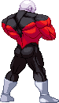
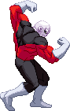
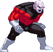

activate Beyond Strength Mode (LV2)
Activating the Beyond Strength Mode changes a few things in Jiren's gameplay.
- Upon activation, two bars are added to the bottom of the screen.
- The top bar is a buffer bar which is your resource for comboing into throws. If the bar is empty, it cancels out the Mode.
- You read that right: you are now able to combo into throws like his Justice Tornado.
- Starting a combo with a non-throw attack also allows for multiple throws in a single combo.
- Once you use a throw in a combo the opponent can be hit OTG as well.
- The bottom bar is the Beyond Strength bar which fills by doing Jiren's (regular/Special/Super/Zetto Counter) Throws.
- You gain the Justice Flex (detailed below), which also fills his Beyond Strength Bar.
- The taunt he does after trying to use his 'Warrior, Get Up' OTG throw twice in a row fills the Bar a big chunk as well.
- Jiren The Grey costs LV2 instead of LV3 of super meter and cancels the Beyond Strength Mode.
- Depending if you're on LV1, 2 or 3 of the Beyond Strength Bar, Jiren will perform a unique and powerful Finisher at the end of the Jiren The Grey.
- Upon activation, two bars are added to the bottom of the screen.
- The top bar is a buffer bar which is your resource for comboing into throws. If the bar is empty, it cancels out the Mode.
- You read that right: you are now able to combo into throws like his Justice Tornado.
- Starting a combo with a non-throw attack also allows for multiple throws in a single combo.
- Once you use a throw in a combo the opponent can be hit OTG as well.
- The bottom bar is the Beyond Strength bar which fills by doing Jiren's (regular/Special/Super/Zetto Counter) Throws.
- You gain the Justice Flex (detailed below), which also fills his Beyond Strength Bar.
- The taunt he does after trying to use his 'Warrior, Get Up' OTG throw twice in a row fills the Bar a big chunk as well.
- Jiren The Grey costs LV2 instead of LV3 of super meter and cancels the Beyond Strength Mode.
- Depending if you're on LV1, 2 or 3 of the Beyond Strength Bar, Jiren will perform a unique and powerful Finisher at the end of the Jiren The Grey.

Justice Flex
Jiren performs one of three possible flexing poses (which have no different effects between the three of them),
filling his Beyond Strength bar a bit. It also gives armor to all of his Medium normals.

Hellfire
Jiren's rage explodes into a wall of fire on each side of the screen,
limiting the opponent's field of movement. The farther your Beyond Strength Bar was filled
when you actived this, the longer it will last.